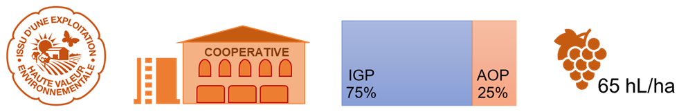
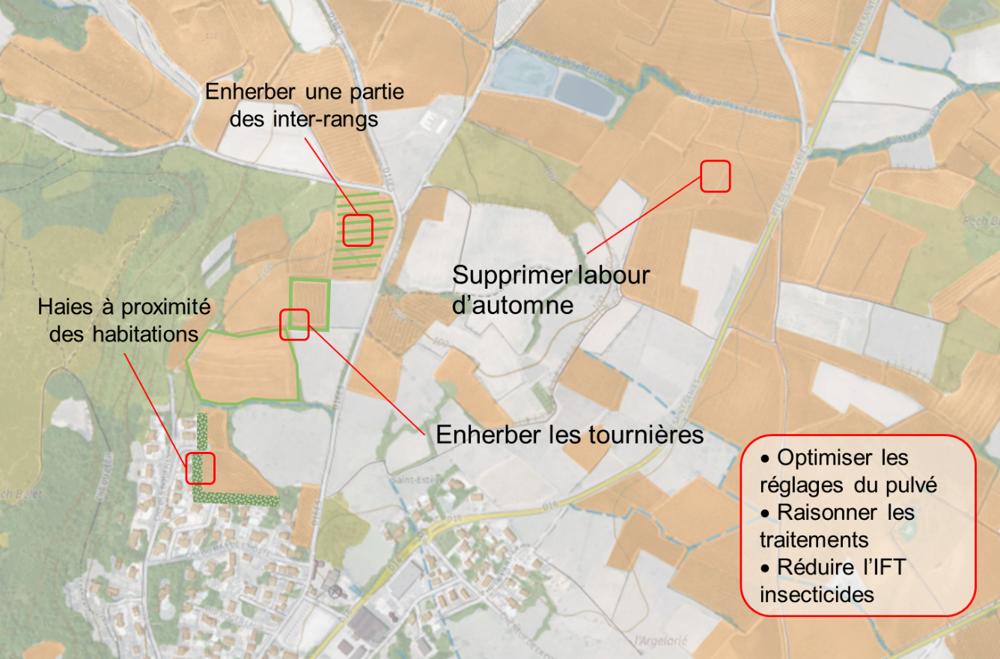

Comment changer sans tout bouleverser ?
Avec un vignoble majoritairement IGP (75% de la production), l’exploitation est labellisée HVE et livre son raisin à la cave coopérative. Rajouter gamme de SAU

L’exploitation mobilise environ 2 équivalents temps plein à l’année, dispose d’une voûte pneumatique pour les traitements. Elle n’est pas équipée en intercep.
Sa capacité d’investissement est d’environ 15 000 € par an.
Les pratiques actuelles de l’exploitation
La protection phytosanitaire
L’exploitation pratique le sous-dosage pour les traitements en début de saison lorsqu’il y a peu de végétation à protéger.
Pour gérer les cicadelles et les vers de la grappe 2 à 3 traitements insecticides sont appliqués par an (produits double cible) .
Gestion de l’herbe
Les inter-rangs sont labourés, environ 4 passages par an dont 1 labour d’automne. Sur le rang, l’exploitation a recours au désherbage chimique, avec 2 passages de glyphosate et 1 anti-germinatif.
Quelles évolutions des pratiques ?
Des leviers simples et peu contraignants à mettre en œuvre
| Objectif | Pratique |
|---|---|
| Réduire l’IFT | Mieux raisonner les traitements et optimiser les réglages de son pulvérisateur |
| Réduire les risques de transfert dans les eaux | Mettre en œuvre l’enherbement systématique des tournières, supprimer le labour d’automne et sur les parcelles où c’est possible, enherber une partie des inter-rangs. |
| Protéger les riverains | Planter des haies à proximité des habitations |

Réduction des impacts
to be continued…